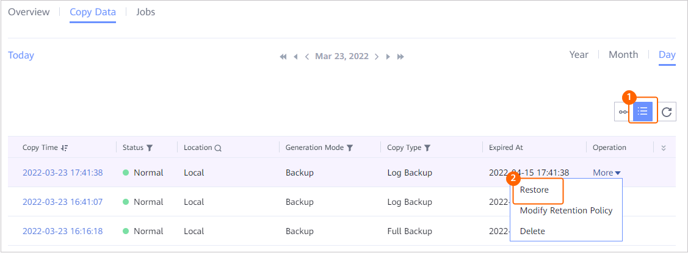
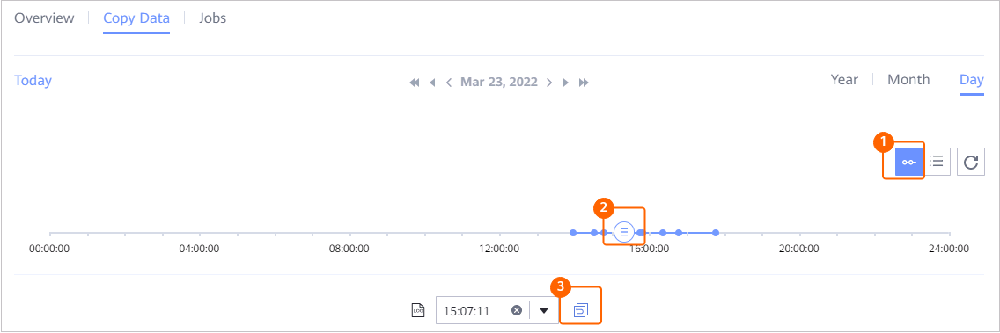

This section describes how to restore a TiDB backup resource that has been backed up to the original or a new location.
Context
Backup copies, replication copies, or imported copies can be used for restoration. Restoration to the original location or a new location is supported. Note that replication copies cannot be used for restoration to the original location.
Prerequisites
- Before the restoration, ensure that the restoration target location is correct.
- Before the restoration, ensure that the remaining space of the data directory at the target location for restoration is greater than the size of the copy used for restoration before reduction.
- Before executing the restoration job, disable the TiDB log backup function. After the restoration job is complete, enable the function again. For details about how to enable and disable the function, see Enabling or Disabling the Log Backup Function in the Production Environment.
- The clock source configuration of clusters must be the same.
Procedure
- Choose Explore > Copy Data > Databases > TiDB.
- You can search for copies by TiDB backup resource or copy. This section describes how to search for copies by resource.
On the Resources tab page, locate the backup resource to be restored based on the backup resource name and click the backup resource name.
- Click the Copy Data tab and select the year, month, and day in sequence to locate the copy.
If
 is displayed below a month or day, a copy is generated in that month or day.
is displayed below a month or day, a copy is generated in that month or day. - Specify a copy or point in time for restoration.
You can either restore data to a specified point in time or using a specific copy.
- Restoring data to a specified point in time or using a specific copy
- Restoring data using a specific copy

- Restoring data to a specified point in time

Data can be restored to the specific time point in the blue part on the timeline. indicates that a copy exists at the time point. If no logs are backed up at a time point, data cannot be restored to the time point.

- For 1.5.0, a maximum of 100 copies can be displayed on the timeline. You can click
 to view all copies.
to view all copies. - During point-in-time recovery, the information about the copy used for restoration cannot be obtained on the management page. Therefore, users cannot view the copy information of the restoration job on pages of the restoration job and related events.
- For 1.5.0, a maximum of 100 copies can be displayed on the timeline. You can click
- Restoring data using a specific copy
- Restoring the TiDB backup resource to the original or a new location
Table 1 describes the related parameters.
Table 1 Restoring TiDB namespaces or table sets Parameter
Description
Restore To
Select either Original location or New location.
Target Cluster
If you choose to restore to New location, choose the target TiDB cluster.
NOTE:- The target database will be deleted during log restoration.
- Restoring data from a database of a later version to a database of an earlier version may fail. Query TiDB official documents to check whether the database version is compatible.
Delete Same-Name Table
Use this parameter to decide whether to delete tables with the same names. When this option is enabled during full copy restoration, the ProtectAgent host deletes tables with the same names in the target location and in the original copy by default.
NOTE:If you do not delete tables with the same names, the restoration will fail. Exercise caution when performing this operation.
- Click OK.
- Restoring data to a specified point in time or using a specific copy